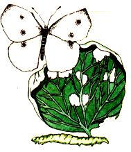
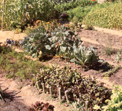
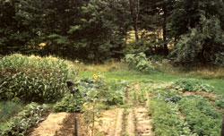
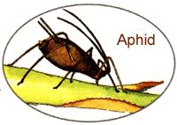
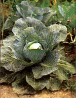
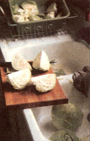
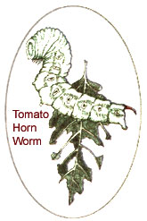
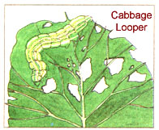
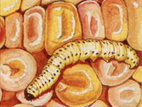
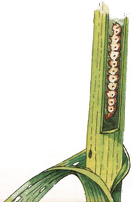

Spring Garden Special
As a gardener in the public eye-I am a past president of the Maine Organic Farmers and Gardeners Association; I have taught gardening classes, A lectured, and written a gardening column for the past 25 years-I get asked a lot of gardening questions. The subject I am asked about most often is insects. The question from experienced gardeners is usually: "What do you do about (fill in the name of an insect)?" A beginning gardener ends the question with something like: ". ..what about those green worms on broccoli?"
My simple answer is usually not very satisfying to the questioner. "Nothing." But, hey, it's better than the answer you will get from a doctor you run into on the street if you ask about a medical problem. I didn't say, "See me in my office." I actually answered the question honestly. Well, mostly.
I remember attending a lecture on economics given by Scott Nearing. Several hundred back-to-the-landers were gathered at Common Ground Country Fair to hear their mentor give a talk on economics. He stepped to the podium, arranged his papers before him, and looked out at the gathered crowd. "I am going to tell you all you need to know about economics," he said. He looked down at his papers and then back at the crowd. "Pay as you go." He gathered his papers and sat down.
That was such a memorable speech that I have been trying to duplicate it. I can tell you all you need to know about insects that damage crops in the garden: "Grow healthy plants in a healthy soil."
Scott returned to the podium with his wife, Helen. They answered questions about homesteading, maple sugaring, building stone houses and walls, gardening, and Living the Good Life. I will come back to the podium and talk about insects I have known.
What do I do about insects that damage crops? I observe them (primary research). I identify them and do a little secondary (book) research. And then I wait to see if the damage is significant enough to justify concern. When I say I do nothing, and that isn't always my response, I mean that I do nothing to interrupt the life cycle of the insect-no spraying, no picking, no sticking, no luring, or zapping.
Some will say that is all well and good for people living in Maine and simi lar climates, because the insects are killed in the winter. I am not going to argue the point. I am going to be specific about the insects that eat or have eaten vegetables in my Maine garden. People can draw their own conclusions.
Insects do significant damage to apples and pears that I have tried to grow. I have not tried very hard to grow fruit crops so I can't say with confidence that the philosophy and methods I use for vegetables will work for fruit. Be assured that I will not give up on the philosophy until I have done everything I can think of to make it work. Even then I may conclude that I just haven't found the key, rather than that the philosophy is flawed.
The philosophy is that healthy plants do not attract insect "pests." Think of insects that damage crops as indicators that a plant is not healthy rather than as pests. Their job is to clear away poor-quality living things so that general health will prevail.
One of my favorite examples of this happened in my second garden. I planted four rows of turnips. Don't ask me why I planted so man) turnips. It was just one of those things. I guess there were enough seeds in the packet. Whatever. The plants were looking beautiful, until one day when I noticed some of them were wilting. I looked more closely and found the stems of the plants were covered with black aphids. They were infested.
I couldn't believe it. Since I didn't know what to do and didn't think I would miss the turnips anyway, I did nothing. The result was a mystery that puzzled me for several years. The aphids did not destroy all the plants. They got the plants they were covering; but as the attacked plants got weaker and weaker, I noticed that the plants at the ends of the rows were fine. Here were four 25-foot rows of turnips in which the center section of all four rows had been basically annihilated, while about four feet on either end of the rows were left virtually untouched.
It was three years later when I was working on illustrations for my book that I came upon an explanation to the mystery that suits me. The illustrations were garden plots for each year drawn to scale and placed on the paper in the same relationship one year to another. I found that the turnip rows of the second garden crossed the corn patch of the first garden. The aphids had destroyed the turnips that were growing in soil that had hosted corn the year before. Rows of other vegetables crossed the corn patch without incident. The turnips did fine in ground previously inhabited by beans, beets, lettuce, and potatoes. My non-scientific conclusion was that the corn took something from the soil that I did not replace and that the turnips needed.
There have been scientific studies conducted that support the claim that insects attack plants that are not receiving a proper balance of nutrients. There have also been more examples in my garden over the years.
The principal things that I do to protect my crops from insects are rotating the crops, maintaining a high level of humus by adding some bulk organic material every year, and changing the bulk material every so often (horse manure with shavings, chicken manure or seaweed, hay, leaves, etc.). A soil test every other year or so also helps keep me on track.
The probable reason I did nothing about aphids was that I realized I had planted too many turnips, especially since they are not a favorite vegetable of mine. In subsequent years, I have found aphids on nasturtiums. The irony is that the nasturtiums were planted to repel aphids. I won't mention any of the books that recommend that, but I came to the conclusion that nasturtiums would be better listed as a catch crop for the aphids. Planting crops for the purpose of repelling or attracting insects is called companion planting. Nasturtiums, marigolds, and aromatic plants are generally mentioned in this regard. Frankly, I am not a great fan of companion planting. It doesn't do any harm and it may do some good, but when you see nasturtiums or marigolds in my vegetable garden it is because they are pretty kind of nice to have around.
What do I do about aphids? I haven't no ticed any in my garden since 1974. For some this is just one of those mysteries of organic agriculture. Clearly aphids can destroy crops in Maine-more specifically, in my garden. Yet they were only here in my second and third garden.
What I recommend for anyone who has a problem with aphids is an immediate soil test. Get humus in the soil. Get the soil nutrients balanced. Use this indication of a soil problem to improve the health of the garden for next year.
The first insect to cause me to panic was the cabbage worm or cabbage looper. These are two different insects, but the difference is of no value other than to make gardeners who know the difference feel superior to gardeners who don't. At the time of my first encounter, I didn't know the difference.
I should back up a bit. I did not grow cabbage or any members of the cabbage family in my first garden. Potatoes, corn, onions, cucumbers, zucchini, tomatoes, green beans, peas, spinach, beets, lettuce, and radishes all flourished without any insect damage. The reason, of course, was my purity. Perhaps luck in starting on fertile soil and in a place where no garden crops had been for several years had something to do with it, too. But when you are young and pure and self-righteous ...well, I'm afraid I did not hide my light under a bushel basket that winter. Several more experienced growers with whom I came in contact asked what I had done about cabbage worms. When they found that I hadn't grown any of the crops that attract this green fellow they just gave me a superior smile.
I was sure my methods would work for any crop. Cabbage, cauliflower, and broccoli were planned for the next garden. One of the controls you may come across when reading about pest control is separating crops of the same family. Insects that feed on one member of the family, say potatoes, may also feed on other members of the same family, tomatoes or eggplant, for example. The idea is to make it difficult for insects to crawl from one crop to another. I have observed a lot of insects and, with the possible exception of the tomato horn worm, I have never been able to detect insects moving from one plant to another. My insects stay with the host upon which they were hatched.
Nor have I seen anything that would lead me to believe that a larger patch of one family is more likely to attract insects in flight than an individual plant. Flying insects get around and investigate just about everything that might be of interest to them. Do you think you are more likely to be bitten by a mosquito when you are in a crowd than when you are alone?
I planted these three brassicas (mem bers of the cabbage family) next to each other. I planted them next to the central garden path and close to the house where I could keep an eye on them. And, lo, it came to pass that dark green balls similar in size and color to capers appeared in the center of the cabbage plants just as they started to form heads. Upon close inspection, worms were discovered, and they were eating the leaves of my cabbage plant. In a panic I rushed to the Agway store for some Rotenone. Rotenone is a poison that is derived from plants. It does not hang around in the soil long and therefore poses no problem through accumulation. It is, however, a contact poison. It kills most insects with which it comes in contact.
My trip to buy this poison sobered me somewhat. By the time I got home I had decided to use it on only half of the plants. I would leave the rest for observation. Once in the garden with the Rotenone I decided to dust only a third of the plants. I ended up dusting a fourth of them. I hated it. I wasn't wearing breathing apparatus or protective clothing as should be worn. I got a taste in the back of my mouth that was like sucking on pennies. Not pleasant. After the deed, I changed my clothes and showered but still felt contaminated. That was the first and last time I ever used a poison in my garden. Natural or not, acceptable by organic standards or not, it is not for me.
This decision was not based entirely on my dislike of the poison and my role. If Rotenone were the only way I could grow cabbage and get it to a harvestable stage, I would probably use it. That first year I harvested all of the cabbage I had planted. Threefourths of them had been left mostly to their own devices. I may have hand- picked a few worms. Who could resist? If I can get cabbage that pleases me without using poisons, then why use poisons?
The cabbage looper-for those of you who want to feel superior-has front and back legs and loops into an omega shape when it travels. The cabbage worm has legs all along its body and moves flat against the leaves. Just to confuse you, they are both caterpillars.
"The cabbage looper, Trichoplusia ni. A native caterpillar common throughout the country. It attacks all members of the cabbage family-broccoli, Brussels sprouts, cabbage, cauliflower, collards, horse-radish, kale, kohlrabi, mustard, radish, turnip-and also feeds on beet, celery, lettuce, parsley, pea, potato, spinach, tomato; and on flowers-carnation, chrysanthemum, mignonette, geranium, and others. The looper is said to be a serious lettuce pest. It winters as a green-to-brown pupa wrapped in a cocoon attached by one side to a plant leaf, and transforms in spring into a moth with mottled brownish fore wings, with a small silvery spot in the middle, and paler brown hind wings. Wing expanse is just under 1 1/2 inches." That is from The Gardener's Bug Book, by Cynthia Westcott. It goes on to give more information about the insects and some methods of control. I have several insect identification books, but this is my favorite. Her chemical control methods are of no use to me, but she does include natural methods when they make sense to her. Control that I like is usually based on knowing the insect well, and she gives me the information I need.
As for the cabbage caterpillars, I usually just pick them off if I feel like it or let them eat. Picking them from cabbage is difficult be cause they are hard to see. When the sun is low in the sky you can sometimes see them better using the sun to "x-ray" the leaves.
Despite the wonderful list of vegetables Cynthia says they will "attack" and the fact that I grow most of these, and despite the fact that I may see a dozen cabbage moths fluttering over the garden on a given day, and that the females lay several hundred eggs each, these caterpillars have never been a problem on any vegetable in my garden. Go figure.
When I was selling vegetables it was more important that they look good if not perfect. The holes in the leaves of the cabbage plants and the worms in the broccoli can be eliminated with a very benign spray called Bacillus thuringiensis (Bt). This is a bacteria that is only harmful to Lepidoptera-butterflies and moths. Further, it has to be ingested by the larval caterpillar-stage of the insect. It will not kill anything on contact. If you spray Bt on the leaves of plants you want to protect, it will only kill the Lepidoptera larva that eat those leaves.
While I'm on Lepidoptera, there is one more which visits my garden that can be controlled with Bt. This is a worm about the size of a finger: the tomato horn worm. It is so named because of a horn on its back end. It is usually first noticed by its excrement also. These bugs should be picked off, as even one can eat quite a bit. The horn can be scary, even for an old bugpicker such as myself. When you pull the worm off, it whips around causing you to think you might be hurt. Not so, but still you might want to wear gloves, or use pliers or something to do them in without grasping them with bare fingers. I'm generally too lazy to get gloves or pliers, so I just steel myself for the task. (The moth of the tomato horn worm can be mistaken for a hummingbird. It is that big and it acts like a hummingbird, too.)
I have felt the presence of three other Lepidoptera-European corn borer, corn earworm, and cutworm. These creatures can be killed with Bt if you can get them to eat it. The corn borer and earworm don't hang out on the surface of the plants. The borer bores a hole in the stem and goes inside to eat. The earworm generally gets inside the ear and eats the kernels. The cutworm lives below ground. It cuts the stems of plants near the soil line. Even if it were practical to spray the stems with Bt, the nasty gray grub will have killed the entire plant before the Bt takes effect.
Before I tell you what I do to avoid these problems, let me tell you what I would do if I had them. There are a number of good books dealing with garden insects. In them you will find a variety of ways to control insects. What any individual gardener uses is probably more a matter of preference and what seems to work best for him or her.
Keep in mind that you won't always know that your method of control is effective in a given year. It is like the common cold. You can take aspirin, vitamin C, lots of water, and get plenty of rest and the cold will leave in seven days, or you can do nothing and wait it out, in which case it will be gone in about a week. If you feel proactive measures need to be taken, you might consider doing nothing on part of the patch, as I did with the cabbage.
Corn borers can be hand-picked. You need to be observant. When you detect a hole in a corn stalk and perhaps some sawdust outside, cut a slit below the hole and dig out the worm. European corn earworms can be controlled by squirting mineral oil on the silk where it emerges from the ear. Cutworms can be controlled when you are transplanting by putting a collar around each plant. Since the grub curls around the stem when it is cutting it, a toothpick or other small stick pushed into the ground next to the stem may also work.
Those are the measures I would take if I were going to do something. If every year were like last year in the corn patch, I might consider those actions. Last year I had corn earworm damage in just about every ear. I don't consider that a problem, as the part of the ear they damage can be cut out leaving plenty to eat. But to go from virtually no damage year after year to a year like the last one is disconcerting. What happened?
Unfortunately, a lot of things happened, which is often the case in gardening. That's why it may take years of observation and some experimentation to figure things out. First, we had a winter that was unusually kind to life in the soil. We got snow cover early and it stayed on the ground insulating it all winter. The frost, which can go four feet deep some winters, was only an inch deep in my garden. Earworms and borers are usually killed in winters north of New Jersey and fly into our fields and gardens from the south. It is reasonable to think many survived last winter. Second, there was a tropical storm that pumped lots of warm air into Maine from the south at just the right time to blow the moths of these caterpillars in our direction. Third, I transplanted corn for the first time ever to try to get an earlier crop. Fourth, I didn't fertilize my corn the way I usually do.
As you might guess, I don't like the first two possibilities. They indicate that my pest-free corn in other years is just the luck of location. However, other gardeners and farmers in the area in other years have had to spray or take other measures to protect their corn, which helps me keep faith in my methods.
When I harvested the transplanted corn and found the earworm damage, I was convinced it was because the plants had been weakened by transplanting. I was anxious to have this confirmed by the later plantings of corn. You can imagine my disappointment at finding all the plantings damaged by caterpillars. That leads to the fourth anomaly. I like to plant double rows of corn about six inches apart with three-and-a-half feet between. I start by hoeing a trench eight inches or so deep. I spread manure in the bottom of the trench-even a hot, raw manure like chicken. I then partially cover the manure by hoeing another trench three inches deep on one side of the manure trench. Seeds are planted in this trench, a pair every foot. This is repeated on the other side of the manure trench, the seeds covered, and, oila!, insect control in the corn has been taken care of for another year. Last year the manure I used was two-year-old horse manure that had been stored outside. It was lovely humus but it didn't have much nitrogen, which corn needs in abundance. That's what I'm blaming my corn insect problem on. Hey, even if I had that much of a problem every year, it would still be minor. As proud as I am of harvesting insectfree corn year after year, I can still live with a little damage and less pride.
There is another insect that may be found in corn. This poor fellow suffers the slings and arrows of gardeners though it is more beneficial than destructive. I refer to earwigs. The earwig did not get its name from being discovered in corn ears, though that is a frequent day-time hangout. It was once believed that earwigs crawled into the ears of sleeping persons. A nasty thought, especially since they frequently do get into houses. They are not particularly attractive, either. They are brown, beetle-like insects, almost an inch long, with menacing-looking pincers at the tail end that look like forceps.
Earwigs eat a little bit of everything. Decaying matter and other insects are helpful to us. If they eat corn silk, it will cause the corn ears to be deformed. Did you realize that every kernel of corn is attached to a strand of silk? If the strand is damaged, that kernel will not develop. I have never noticed much damage from earwigs so I leave them alone. Anyone who wants to get rid of them can take heart in the knowledge that they don't fly worth a darn. Most earwig movement is as hitch-hikers. You may bring some home from the florist or the grocery store.
Now, to wrap up the caterpillars that I have come to know in my garden. I think I read somewhere-but since I can't find it in any of my books right now perhaps I dreamed it-that cutworms like wilting plants. No matter if it isn't a proven theo ry, my experience over the years has supported it. I can only recall one time when cutworms bothered any vegetables other than those that had been transplanted. We had a very dry spring that year. I had not built up the humus level very much at the time and plants wilted in the draught. Cutworms damaged several crops that had been planted from seed. I had never seen anything like it before nor have I since. The damage seemed significant in the spring, but as the garden matured what once seemed like big spaces filled in.
I protect my seedlings from cutworms by making their transition from seedling flat to garden as stress-free as possible. First, the seedlings are hardened off by moving them outside in the flats for an hour or two the first day and increasing the time until, in a week, they stay out around the clock. Second, I separate the seedling roots from each other while sloshing them around in a bucket of water and working the planting medium back and fourth gently. This minimizes the amount of root damage. I put a tablespoon or so of liquid seaweed in the bucket of water just for good measure. When the transplants go in the ground the soil is firmed around the roots and then the ground is soaked so that the water will further put roots in contact with soil. lust in case, I hold onto extra plants either healed in at the end of the row or still in flats as replacements. I seldom need a replacement.
I set out in this article to cover all the insects that damage crops in my vegetable garden. They are such a small part of gardening that I was sure I could cover the subject adequately, but I have only covered caterpillars, earwigs, and aphids. It was not my intention to slight the beetle family known to my cucumbers, asparagus, beans, and, of course, potatoes. Lets not forget the flea beetles that have wiped out early plantings of broccoli and severely stunted radishes. Then there are flies that lay eggs that become root maggots and leaf miners. Squash bugs are always good for a laugh, especially when you squash them and are reminded that when you were younger you called them stink bugs. All told there are 17 vegetable-eating insects with which I have become familiar over the years, and so far I only covered eight. Next issue I'll finish the job.
Part II of our guide to "Low-Maintenance Pest Control" will appear in April.
Related Articles:
Types of Pest Control
|
 Cabbage Worm Illustrations: Bella Hollingworth |
 A lush garden, properly fertilized, simply doesn't attract insects. |
 A relatively pest-free year in my garden (I was particularly proud of the corn at left). |
|
 It may look like this cabbage has seen a lot of pest damage, but when I harvested. |
 .. the heads were actually fine. |
 European Corn Borer |
|
 Corn Worm Damage |
 |
 |
|
 |
|
|